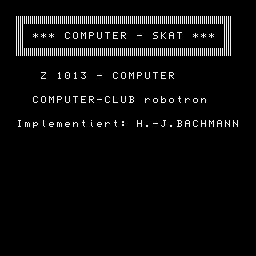
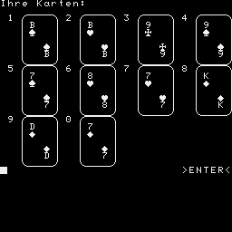

2bc0 5357 0300 B ...
SKAT 1 WINDOW:CLS
2 WINDOW 6,20,0,31 : PRINT TAB(2)""
3 PRINT TAB(2)""TAB(28)""
4 PRINT TAB(2)" *** COMPUTER - SKAT *** "
5 PRINT TAB(2)""TAB(28)""
6 PRINT TAB(2)""
7 PRINT:PRINT:PRINT TAB(5)"Z 1013 - COMPUTER"
8 PRINT:PRINT:PRINT TAB(4)"COMPUTER-CLUB robotron"
9 PRINT:PRINT:PRINT TAB(2)"Implementiert: H.-J.BACHMANN":GOSUB 384:PAUSE 30
10 WINDOW:CLS:GOSUB 376:CLS:PRINT AT(0,0);" ":CLEAR 1000
11 A1$=CHR$(8):A2$=CHR$(9):A3$=CHR$(10):A4$=CHR$(11)
12 A5$=STRING$(5,A1$)+A3$:A6$=A5$+" ":A7$=STRING$(5,A6$)
13 A8$=STRING$(5,A4$):A9$=STRING$(4,A1$):AA$=STRING$(27,A2$)
14 AB$=STRING$(22,A2$)
15 PRINT AT(1,2);"SKAT"
16 PRINT AT(4,0);"Ich mische die Karten, verteile"
17 PRINT AT(6,0);"und sortiere sie. Ich versichere"
18 PRINT AT(8,0);"Ihnen,dass ich Ihnen nicht in"
19 PRINT AT(10,0);"die Karten schaue oder deren"
20 PRINT AT(12,0);"Verteilung manipuliere."
21 PRINT AT(15,0);"Wenn Sie >ENTER< in der rechten"
22 PRINT AT(17,0);"unteren Ecke sehen druecken"
23 PRINT AT(19,0);"Sie bitte die Taste >ENTER<."
24 DIM B(3,12),PT(3),K(32),R(2),HR(2),SK(3),R5(3),R2(3),S1(3),S2(3),S3(3)
25 DIM GP(3):ZV=INT(RND(1)*3)+1:Q=1:GOSUB 78
26 CLS:PRINT AT(0,0);" "
27 PRINT AT(2,2);"Einen Moment,"
28 PRINT AT(4,2);"Ich mische die Karten"
29 FOR I=1 TO 32:K(I)=1:NEXT I
30 FOR Z=1 TO 3:FOR T=1 TO 10
31 FOR I=INT(RND(1)*31)+1 TO 32:IF K(I)=0 THEN NEXT I:GOTO 31
32 GOSUB 75
33 K(I)=0:B(Z,T)=W:NEXT T,Z
34 Z1=1:FOR I=1 TO 32:IF K(I)=0 THEN NEXT I:GOTO 36
35 GOSUB 75:R(Z1)=W:Z1=2:NEXT I:Z1=0
36 Z=1:GOSUB 257
37 GOSUB 262:GOSUB 183:GOSUB 199
38 GOSUB 239:Z=ZV:FOR RD=1 TO 10:GOSUB 82
39 PRINT:PRINT STRING$(6,CHR$(10))
40 PRINT "Dieser Stich geht an Spieler"Z;:PRINT CHR$(8);
41 IF Z=SP THEN PRINT ", dem Einzelspieler.":ELSE PRINT
42 GOSUB 78
43 Z2=Z:IF RD<10 THEN GOSUB 262
44 Z=Z2:FB=0:NEXT RD
45 CLS:FOR I=1 TO 5:PAUSE 2:NEXT I
46 PRINT "Wertung:"Q;A1$;". Spiel ("INT((Q-1)/3+1);A1$;". Runde )"
47 FOR I=1 TO 2:Z1=VAL(RIGHT$(STR$(HR(I)),1)):GOSUB 313:PT(SP)=PT(SP)+W:NEXT I
48 PRINT:PRINT "Einzelspieler war Spieler Nr"SP;A1$;"."
49 PRINT:IF SP=1 THEN PRINT "Sie erreichten"PT(SP)"Punkte!"
50 IF SP<>1 THEN PRINT "Er erreichte"PT(SP)"Punkte!"
51 PRINT:IF SF=1 AND PT(SP)>90 THEN FG=1:GOTO 54
52 IF SF=0 AND PT(SP)>60 THEN FG=1:GOTO 54
53 FG=0
54 IF(FG=1 AND SP=1)OR(FG=0 AND SP<>1)THEN PRINT "Sie haben gewonnen":GOTO 56
55 PRINT "Sie haben verloren"
56 ZV=ZV+1:IF ZV=4 THEN ZV=1
57 IF PT(SP)>90 OR PT(SP)<30 THEN R5(SP)=R5(SP)+1:PRINT "Schneider";:TT=1
58 IF SF=1 AND TT=1 THEN PRINT " &> angesagt"
59 TT=0:PRINT:IF SF=1 THEN R5(SP)=R5(SP)+1
60 IF HF=1 THEN R5(SP)=R5(SP)+1:HF=0
61 IF GR=1 THEN GR=0:S2(SP)=24*(R5(SP)+1):GOTO 63
62 S2(SP)=(R5(SP)+1)*R2(SP)
63 PRINT AT(16,0);"Spielstand"
64 IF(PT(SP)<61)OR(PT(SP)<91 AND SF=1)THEN S2(SP)=-2*S2(SP)
65 SF=0:IF S2(SP)>=GW OR FG=0 THEN 69
66 PRINT "Moment...":IF SP=1 THEN PRINT "Sie haben sich ";:GOTO 68
67 PRINT "SPIELER"SP "hat sich ";
68 PRINT "ueberreizt.":PRINT "---verloren!":S2(SP)=-2*S2(SP)
69 IF KF=1 THEN S2(SP)=2*S2(SP):KF=0
70 IF RF=1 THEN S2(SP)=2*S2(SP):RF=0
71 PRINT AT(18,0);"Spieler1 Spieler2 Spieler3 Spiel"
72 GP(SP)=GP(SP)+S2(SP):FOR I=0 TO 2:PRINT AT(20,I*09);GP(I+1):NEXT I
73 PRINT AT(20,28);S2(SP)
74 FOR I=1 TO 3:PT(I)=0:NEXT I:Q=Q+1:GOSUB 78:GOTO 26
75 W=(INT((I-1)/4)+1)+10*(((I-1)/4-INT((I-1)/4))*4+1)
76 IF INT((I-1)/4)+1=8 THEN W=W+200
77 RETURN
78 PRINT AT(23,25);">ENTER<"
79 P$=INKEY$:IF P$<>CHR$(13)THEN 79
80 PRINT AT(23,25);" "
81 RETURN
82 FB=0:ON Z GOTO 83,84,84
83 GOSUB 320:GOSUB 338:GOTO 94
84 IF SP=Z THEN 89
85 GOSUB 175
86 IF H=0 THEN GOSUB 167
87 IF H-10*INT(H/10)=6 THEN GOSUB 178
88 SK(Z)=H:GOSUB 338:GOTO 94
89 GOSUB 167:IF VAL(RIGHT$(STR$(H),1))>5 THEN GOSUB 165:GOTO 91
90 GOTO 92
91 IF VAL(RIGHT$(STR$(H),1))>5 AND H<200 THEN GOSUB 175:IF H=0 THEN GOSUB 165
92 IF H=0 THEN GOSUB 175
93 GOTO 88
94 FB=INT(SK(Z)/10):Z=Z+1:IF Z=4 THEN Z=1
95 IF Z=1 THEN GOSUB 320:GOSUB 338:GOTO 118
96 IF Z=SP THEN 110
97 IF SK(SP)>0 THEN 102
98 GOSUB 170:IF H=0 THEN GOSUB 167
99 IF H=0 THEN ON 1+INT(RND(1)*2)GOSUB 175,178
100 SK(Z)=H:IF INT(H/10)<>FB AND H<100 THEN SK(Z)=-H
101 GOSUB 338:GOTO 118
102 IF SK(SP)>100 THEN 108
103 GOSUB 170:IF H>SK(1)THEN 100
104 IF H>0 THEN GOSUB 172:GOTO 100
105 GOSUB 167
106 IF H=0 THEN GOSUB 178
107 GOTO 100
108 GOSUB 167:IF H=0 THEN GOSUB 178
109 GOTO 100
110 ZW=Z-1:IF ZW=0 THEN ZW=3
111 IF FB>9 THEN 116
112 GOSUB 170:IF H>SK(ZW)THEN 100
113 IF H>0 THEN GOSUB 172:GOTO 100
114 GOSUB 167:IF H>0 THEN 100
115 GOSUB 178:GOTO 100
116 GOSUB 165:IF H=0 THEN GOSUB 178
117 GOTO 100
118 Z=Z+1:IF Z=4 THEN Z=1
119 IF Z=1 THEN GOSUB 320:GOSUB 338:GOTO 156
120 IF Z=SP THEN 138
121 GOSUB 152:IF H1=SK(SP)THEN 128
122 IF FB<10 THEN 125
123 GOSUB 167:IF H=0 THEN GOSUB 175
124 GOTO 136
125 GOSUB 170:IF H=0 THEN GOSUB 175
126 IF H=0 THEN GOSUB 167
127 GOTO 136
128 IF FB<9 THEN 131
129 ON 1+INT(RND(1)*2)GOSUB 165,167:IF H>0 THEN 136
130 GOSUB 178:GOTO 136
131 GOSUB 170:IF H>SK(SP)THEN 136
132 IF H>0 THEN GOSUB 172
133 IF H=0 THEN GOSUB 167:IF H<SK(PS)THEN GOSUB 165
134 IF H=0 THEN GOSUB 172
135 IF H=0 THEN GOSUB 178
136 SK(Z)=H:IF INT(H/10)<>FB AND H<100 THEN SK(Z)=-H
137 GOSUB 338:GOTO 156
138 IF FB>9 THEN 146
139 GOSUB 170:GOSUB 152:IF H>H1 THEN 136
140 IF H>0 THEN GOSUB 172:GOTO 136
141 GOSUB 154:IF SS>8 THEN 145
142 GOSUB 178:IF H=0 THEN GOSUB 167:GOTO 136
143 IF H-10*INT(H/10)>4 THEN GOSUB 167
144 GOTO 136
145 GOSUB 167:IF H=0 THEN GOSUB 178
146 GOSUB 154:IF SS>10 THEN 150
147 GOSUB 167:IF H=0 THEN GOSUB 178:GOTO 136
148 IF VAL(RIGHT$(STR$(H),2))<6 THEN 136
149 GOSUB 165:GOTO 136
150 GOSUB 167:IF H=0 THEN GOSUB 178
151 GOTO 136
152 H1=0:FOR I=1 TO 3:IF H1<SK(I)THEN H1=SK(I)
153 NEXT I:RETURN
154 SS=0:FOR I=1 TO 3:Z1=VAL(RIGHT$(STR$(SK(I)),1)):GOSUB 313:SS=SS+W
155 NEXT I:RETURN
156 FOR Z1=1 TO 3:FOR I=1 TO 10:IF ABS(SK(Z1))=B(Z1,I)THEN B(Z1,I)=0
157 NEXT I,Z1:IF SK(1)>SK(2)AND SK(1)>SK(3)THEN Z=1:GOTO 159
158 GOTO 161
159 IF INT(SK(1)/10)<>FB AND SK(1)<100 THEN 161
160 GOTO 163
161 IF SK(2)>SK(3)THEN Z=2:GOTO 163
162 Z=3
163 SS=0:FOR I=1 TO 3:Z1=VAL(RIGHT$(STR$(SK(I)),1)):GOSUB 313
164 SS=SS+W:SK(I)=0:NEXT I:PT(Z)=PT(Z)+SS:RETURN
165 H=0:FOR I=1 TO 10:IF H<B(Z,I)AND B(Z,I)>100 THEN H=B(Z,I)
166 NEXT I:RETURN
167 H=1000:FOR I=1 TO 10:IF H>B(Z,I)AND B(Z,I)>100 THEN H=B(Z,I)
168 NEXT I:IF H=1000 THEN H=0
169 RETURN
170 H=0:FOR I=1 TO 10:IF H<B(Z,I)AND INT(B(Z,I)/10)=FB THEN H=B(Z,I)
171 NEXT I:RETURN
172 H=1000:FOR I=1 TO 10:IF H>B(Z,I)AND INT(B(Z,I)/10)=FB THEN H=B(Z,I)
173 NEXT I:IF H=1000 THEN H=0
174 RETURN
175 H1=0:H=0:FOR I=1 TO 10:IF H1<B(Z,I)-10*INT(B(Z,I)/10)AND B(Z,I)<100 THEN 177
176 NEXT I:H1=0:RETURN
177 H=B(Z,I):H1=B(Z,I)-10*INT(B(Z,I)/10):GOTO 176
178 H1=10:H=1000:FOR I=1 TO 10
179 IF H1>VAL(RIGHT$(STR$(B(Z,I)),1))AND B(Z,I)<100 AND B(Z,I)>0 THEN 182
180 NEXT I:IF H=1000 THEN H=0
181 RETURN
182 H=B(Z,I):H1=VAL(RIGHT$(STR$(B(Z,I)),1)):GOTO 180
183 FOR Z=1 TO 3:R1=0:R2(Z)=0:R3=0:R5(Z)=0
184 FOR I=1 TO 4:K(I)=0:NEXT I:Z1=0
185 FOR I=1 TO 10:IF B(Z,I)>200 THEN Z1=Z1+1:K(Z1)=B(Z,I)
186 NEXT I:R1=Z1:Z1=0:FOR H=248 TO 218 STEP-10:GOSUB 187:NEXT H:GOTO 189
187 Z1=Z1+1:FOR I=1 TO 4:IF K(I)=H THEN K(Z1+4)=1:RETURN
188 NEXT I:K(Z1+4)=0:RETURN
189 FOR I=5 TO 7:IF K(I)=K(I+1)THEN NEXT I:I=8
190 R5(Z)=I-4:S3(Z)=R5(Z):FOR I=1 TO 4:K(I)=0:NEXT I
191 FOR I=1 TO 10:IF B(Z,I)<100 THEN FB=INT(B(Z,I)/10):K(FB)=K(FB)+1
192 NEXT I:FOR I=1 TO 4:IF R3<K(I)THEN R3=K(I):R2(Z)=I
193 NEXT I:R2(Z)=8+R2(Z):R4=R2(Z)*(R5(Z)+1):R8=0:FOR I=1 TO 10
194 IF B(Z,I)-10*INT(B(Z,I)/10)=7 OR B(Z,I)-10*INT(B(Z,I)/10)=6 THEN R8=R8+1
195 NEXT I:R8=R8/2:R6=(R3-1+R1)*(5+R1)*R8:IF R6>R4 THEN R6=R4:S2(Z)=R4
196 IF R6<18 THEN R7=18:GOTO 198
197 READ R4:IF R4<=R6 THEN R7=R4:GOTO 197
198 R6=R7:RESTORE:S1(Z)=R6:NEXT Z:RETURN
199 GOSUB 78:PG=ZV:Z1=ZV:GOSUB 200:PH=Z1:GOSUB 200:SP=Z1:GOTO 202
200 Z1=Z1+1:IF Z1<4 THEN RETURN
201 Z1=1:RETURN
202 GOSUB 208:IF H=0 THEN SP=PG:GOTO 206
203 GOSUB 214:IF H=1 THEN 202
204 PH=PG:GOTO 206
205 GOSUB 208:IF H=0 THEN SP=PH:GOTO 220
206 GOSUB 214:IF H=1 THEN 205
207 GOTO 220
208 IF SP=1 THEN 211
209 READ R4:PRINT:PRINT SP ":"R4;:IF R4<S1(SP)+.5 THEN H=1:RETURN
210 PRINT "Weg";:H=0:RETURN
211 READ R4:PRINT:PRINT R4;
212 GOSUB 372:IF P$="J"THEN H=1:RETURN
213 H=0:ZW=R4:RETURN
214 PRINT PH ":";:IF PH=1 THEN 217
215 IF R4<=S1(PH)THEN PRINT "Ja";:H=1:ZW=R4:RETURN
216 PRINT "Weg";:H=0:ZW=R4:RETURN
217 PRINT;
218 GOSUB 372:IF P$="J"THEN H=1:RETURN
219 H=0:ZW=R4:RETURN
220 PRINT:PRINT "Spiel geht an Spieler";SP
221 IF SP=1 THEN GOSUB 78:GOSUB 269:RETURN
222 FOR I=1 TO 2:B(SP,I+10)=R(I):NEXT I
223 FOR I=1 TO 4:K(I)=0:NEXT I:FOR I=1 TO 12:FB=INT(B(SP,I)/10)
224 IF FB<10 THEN K(FB)=K(FB)+1
225 NEXT I:F1=0:FB=0:FOR I=1 TO 4:IF F1<K(I)THEN FB=I:F1=K(I)
226 NEXT I:P=FB:GOSUB 294:GOSUB 233:PRINT " IST TRUMPF":S1(SP)=8+P
227 S2(SP)=(1+S3(SP))*S1(SP):FOR I=1 TO 2
228 A=INT(RND(1)*12)+1:IF B(SP,A)>100 OR B(SP,A)-10*INT(B(SP,A)/10)=7 THEN 228
229 HR(I)=B(SP,A):B(SP,A)=0
230 NEXT I
231 Z1=0:FOR I=1 TO 12:IF B(SP,I)>0 THEN Z1=Z1+1:K(Z1)=B(SP,I)
232 NEXT I:FOR I=1 TO 10:B(SP,I)=K(I):NEXT I:GOSUB 78:GOSUB 262:RETURN
233 PRINT "__";
234 IF P=1 THEN PRINT "Karo";:RETURN
235 IF P=2 THEN PRINT "Herz";:RETURN
236 IF P=3 THEN PRINT "Pik";:RETURN
237 IF P=4 THEN PRINT "Kreuz";:RETURN
238 PRINT "Grand";:RETURN
239 IF SP<>1 THEN 249
240 PRINT:FOR T=2 TO 3
241 H1=0:FOR J=1 TO 10:IF B(T,J)>100 THEN H1=H1+1
242 NEXT J:IF H1>4-SF AND T<>SP THEN PRINT "_Spieler"T ": Kontra !":KF=1
243 FOR J=1 TO 700:NEXT J
244 NEXT T:IF KF=0 THEN 255
245 IF SP=1 THEN 252
246 FOR J=1 TO 10:IF VAL(RIGHT$(STR$(B(SP,J)),1))>6 OR B(SP,J)>200 THEN H1=H1+1
247 NEXT J:IF H1>5 THEN PRINT "_Spieler"SP ": Re !!":RF=1:FOR J=1 TO 1000:NEXT J
248 GOTO 255
249 PRINT:PRINT "Kontra ";
250 GOSUB 372:IF P$="J"THEN KF=1
251 GOTO 240
252 PRINT:PRINT "Re ";
253 GOSUB 372:IF P$="J"THEN RF=1
254 GOTO 255
255 GOSUB 262
256 RETURN
257 FOR T=1 TO 10
258 FOR I=1 TO 10:IF Z1<B(Z,I)THEN Z1=B(Z,I)
259 NEXT I:K(T)=Z1:FOR I=1 TO 10:IF B(Z,I)=Z1 THEN B(Z,I)=0
260 NEXT I:Z1=0:NEXT T
261 FOR J=1 TO 10:B(Z,J)=K(J):NEXT J:RETURN
262 CLS:PRINT "Ihre Karten:":PRINT
263 Z=1:FOR T=1 TO 9
264 IF T=5 THEN PRINT:PRINT STRING$(4,CHR$(10))
265 IF T=9 THEN PRINT:PRINT STRING$(4,CHR$(10))
266 PRINT T;:GOSUB 369:NEXT T
267 T=10:PRINT 0;:GOSUB 369
268 PRINT:PRINT STRING$(4,CHR$(10)):PRINT:RETURN
269 PRINT "Hand ";
270 GOSUB 372
271 IF P$="J"THEN HF=1:FOR I=1 TO 2:HR(I)=R(I):NEXT I:GOTO 287
272 GOTO 273
273 F1=1:GOSUB 262:PRINT:PRINT INK 6;"Skat";:PRINT
274 FOR I=1 TO 2:B(1,10+I)=R(I):NEXT I
275 FOR T=11 TO 12:PRINT T;:GOSUB 369:NEXT T
276 K(1)=13:K(2)=13:INPUT "Druecken Nr";K(1):PRINT AA$;:INPUT "Nr";K(2)
277 IF K(1)=0 THEN K(1)=10
278 IF K(2)=0 THEN K(2)=10
279 IF K(1)=K(2)THEN PRINT AB$;A4$;A4$;:GOTO 276
280 FOR I=1 TO 2
281 IF K(I)<1 OR K(I)>12 THEN PRINT AB$;A4$;A4$;:GOTO 276
282 HR(I)=B(1,K(I)):NEXT I
283 Z1=0:FOR I=1 TO 2:B(1,K(I))=0:NEXT I:FOR I=1 TO 12
284 IF B(1,I)<>0 THEN Z1=Z1+1:K(Z1)=B(1,I)
285 NEXT I:FOR I=1 TO 10:B(1,I)=K(I):NEXT I
286 F4=1:Z=1:GOSUB 257
287 GOSUB 262:PRINT "Was ist Trumpf?":PRINT "1. Karo 2. Herz"
288 PRINT "3. Pik 4. Kreuz 5. Grand"
289 P$=INKEY$:P=VAL(P$)
290 GR=0
291 IF P>5 OR P<1 THEN 289
292 PRINT "Nr."P
293 IF P=5 THEN 304
294 S2(1)=(P+8)*(S3(1)+1):FOR Z=1 TO 3:FOR T=1 TO 10
295 IF B(Z,T)<100 AND INT(B(Z,T)/10)=P THEN B(Z,T)=100+B(Z,T)
296 NEXT T,Z
297 FOR T=11 TO 12:IF B(SP,T)<100 AND INT(B(SP,T)/10)=P THEN B(SP,T)=100+B(SP,T)
298 NEXT T:Z=1:GOSUB 257:IF F1=0 THEN GOSUB 262
299 IF F4=0 THEN 303
300 F4=0:SF=0:PRINT "Schneider ansagen ";
301 GOSUB 372:IF P$="J"THEN SF=1
302 GOTO 303
303 GOSUB 306:RETURN
304 GR=1:S2(1)=24*(S3(1)+1):Z=1:GOSUB 257:IF F1=0 THEN GOSUB 262
305 GOSUB 299:RETURN
306 Z1=1:R2(SP)=8+P:IF P=5 THEN R2(SP)=24
307 FOR T=1 TO 4:K(T)=0:NEXT T
308 FOR T=1 TO 4:FOR I=1 TO 10:IF B(SP,I)=258-10*T THEN K(T)=1
309 NEXT I,T:FOR T=1 TO 3:IF K(T)=K(T+1)THEN Z1=Z1+1:NEXT T
310 IF HF=1 THEN Z1=Z1+1
311 R5(SP)=Z1:S2(SP)=(R5(SP)+1)*R2(SP)
312 GW=ZW:RETURN
313 ON Z1 GOTO 314,314,314,315,316,317,318,319
314 W=0:RETURN
315 W=3:RETURN
316 W=4:RETURN
317 W=10:RETURN
318 W=11:RETURN
319 W=2:RETURN
320 PRINT AT(18,19);"Karte Nr.?"
321 P$=INKEY$:!IFP$=""THEN3090
322 IF P$<"0"OR P$>"9"THEN 321
323 P=VAL(P$):IF P=0 THEN P=10
324 IF B(1,P)=0 THEN 321
325 IF SK(2)=0 AND SK(3)=0 THEN 335
326 GE=2:IF SK(2)=0 THEN GE=3
327 F=0:FOR G=1 TO 10
328 IF B(1,G)>100 THEN F=F+1
329 NEXT G
330 IF F>0 AND B(1,P)<100 AND SK(GE)>100 THEN 334
331 F=0:FOR G=1 TO 10:IF B(1,G)>100 THEN NEXT G
332 IF INT(B(1,G)/10)=INT(SK(GE)/10)AND INT(B(1,P)/10)<>INT(SK(GE)/10)THEN 334
333 NEXT G:GOTO 335
334 PRINT AT(18,27);"Bedienen! ":GOSUB 78:GOTO 320
335 SK(1)=B(1,P)
336 IF FB>0 AND INT(SK(1)/10)<>FB AND SK(1)<100 THEN SK(1)=-SK(1)
337 RETURN
338!
339 IF Z=SP THEN PRINT " * ";:GOTO 341
340 PRINT Z;
341 Q$=RIGHT$(STR$(SK(Z)),2)
342 GOSUB 343:RETURN
343 Z1=VAL(LEFT$(Q$,1)):IF Z1=0 THEN PRINT " ";:RETURN
344 ON 5-Z1 GOTO 345,346,347,348
345 B$="":GOTO 349
346 B$="":GOTO 349
347 B$="":GOTO 349
348 B$=""
349 IF F2=1 THEN F2=0:PRINT " ";:RETURN
350 Z1=VAL(RIGHT$(Q$,1))
351 ON 9-Z1 GOTO 352,353,354,355,356,357,358,359
352 A$="B":GOTO 360
353 A$="A":GOTO 360
354 A$="10":GOTO 360
355 A$="K":GOTO 360
356 A$="D":GOTO 360
357 A$="9":GOTO 360
358 A$="8":GOTO 360
359 A$="7"
360 PRINT "";A7$;A5$;
361 PRINT "";A8$;A9$;
362 PRINT A$;A3$;A1$;
363 IF A$="10"THEN PRINT A1$;
364 PRINT B$;A3$;A3$;A2$;
365 PRINT B$;A3$;A1$;
366 IF A$="10"THEN PRINT A1$;
367 PRINT A$;A2$;A8$;
368 RETURN
369 Q$=RIGHT$(STR$(B(Z,T)),2):GOSUB 343:RETURN
370 DATA 18,20,22,23,24,27,30,33,35,36,44,45,46,48,50,54,55,60,63,66,70
371 DATA 72,77,80,81,84,88,90,96,99,100,108,110,120,144,168
372 PRINT "(J/N)? ";:PAUSE 3
373 P$=INKEY$:IF P$="J"THEN PRINT "Ja";:RETURN
374 IF P$<>"N"THEN 373
375 PRINT "Nein";:RETURN
376 PRINT AT(15,7);"EINE TASTE DRUECKEN!":PRINT AT(0,0);" "
377 PRINT AT(5,11);"Ich lasse"
378 PRINT AT(8,3);"den Zufallsgenerator laufen!"
379 X=-32767
380 X=RND(X)
381 X=X+1
382 IF INKEY$=""THEN GOTO 380
383 RETURN
384 XY=DEEK(43):POKE XY,32:RETURN